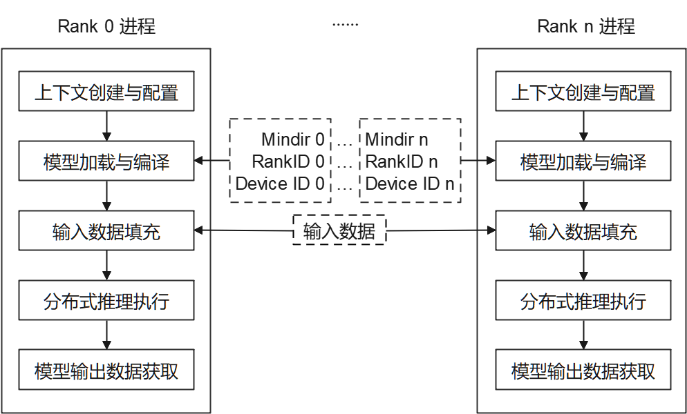

使用C++接口执行云侧分布式推理

概述
针对大规模神经网络模型参数多、无法完全加载至单设备推理的场景，可利用多设备进行分布式推理。本教程介绍如何使用C++接口执行MindSpore Lite云侧分布式推理。云侧分布式推理与云侧单卡推理流程大致相同，可以相互参考。关于分布式推理的相关内容可参考MindSpore分布式推理，相比之下，MindSpore Lite云侧分布式推理针对性能方面具有更多的优化。
MindSpore Lite云侧分布式推理仅支持在Linux环境部署运行，支持的设备类型为Ascend 910和Nvidia GPU。如下图所示，当前通过多进程方式启动分布式推理，每个进程对应通信集合中的一个Rank，对各自已切分的模型进行加载、编译与执行，每个进程输入数据相同。

每个进程主要包括以下步骤：
模型读取：通过MindSpore切分并导出分布式MindIR模型，MindIR模型数量与设备数相同，用于加载到各个设备进行推理。
上下文创建与配置：创建并配置上下文Context，保存分布式推理参数，用于指导分布式模型编译和模型执行。
模型加载与编译：使用Model::Build接口进行模型加载和模型编译。模型加载阶段将文件缓存解析成运行时的模型。模型编译阶段将前端计算图优化为高性能后端计算图，该过程耗时较长，建议一次编译，多次推理。
模型输入数据填充。
分布式推理执行：使用Model::Predict接口进行模型分布式推理。
模型输出数据获取。
编译和多进程执行分布式推理程序。
准备工作
通过MindSpore切分并导出分布式MindIR模型，将其存放至示例代码目录。如需快速体验，可下载已切分的两个Matmul模型文件Matmul0.mindir、Matmul1.mindir。
对于Ascend设备类型，通过hccl_tools.py按照需要生成组网信息文件，存放至示例代码目录，并将该文件路径填入示例代码目录下配置文件
config_file.ini中。下载MindSpore Lite云侧推理安装包mindspore-lite-{version}-linux-{arch}.tar.gz，存放至示例代码目录。解压该安装包，参考快速入门的环境变量章节设置环境变量，
后续章节将结合代码讲述MindSpore Lite云侧分布式推理主要步骤，完整代码请参考示例代码目录下main.cc。
创建上下文配置
上下文配置保存了所需基本配置参数与分布式推理参数，用于指导模型编译和模型分布式执行。如下示例代码演示如何通过Context创建上下文，通过Context::MutableDeviceInfo指定运行设备。
// Create and init context, add Ascend device info
auto context = std::make_shared<mindspore::Context>();
if (context == nullptr) {
std::cerr << "New context failed." << std::endl;
return nullptr;
}
auto &device_list = context->MutableDeviceInfo();
分布式推理场景下支持AscendDeviceInfo、GPUDeviceInfo，分别用于设置Ascend与Nvidia GPU上下文信息。
配置Ascend设备上下文
当设备类型为Ascend时(目前分布式推理支持Ascend910)，新建AscendDeviceInfo，并通过AscendDeviceInfo::SetDeviceID、AscendDeviceInfo::SetRankID分别设置DeviceID、RankID。由于Ascend提供多个推理引擎后端，当前仅ge后端支持分布式推理，通过DeviceInfoContext::SetProvider指定Ascend推理引擎后端为ge。示例代码如下。
// for Ascend 910
auto device_info = std::make_shared<mindspore::AscendDeviceInfo>();
if (device_info == nullptr) {
std::cerr << "New AscendDeviceInfo failed." << std::endl;
return nullptr;
}
// Set Ascend 910 device id， rank id and provider.
device_info->SetDeviceID(device_id);
device_info->SetRankID(rank_id);
device_info->SetProvider("ge");
// Device context needs to be push_back into device_list to work.
device_list.push_back(device_info);
配置使用GPU设备上下文
当设备类型为GPU时，新建GPUDeviceInfo。GPU设备的分布式推理多进程应用由mpi拉起，mpi会自动设置每个进程的RankID，用户只需在环境变量中指定CUDA_VISIBLE_DEVICES，无需指定组网信息文件。因此，每个进程的RankID可以当作DeviceID使用。另外，GPU也提供多个推理引擎后端，当前仅tensorrt后端支持分布式推理，通过DeviceInfoContext::SetProvider指定GPU推理引擎后端为tensorrt。示例代码如下。
// for GPU
auto device_info = std::make_shared<mindspore::GPUDeviceInfo>();
if (device_info == nullptr) {
std::cerr << "New GPUDeviceInfo failed." << std::endl;
return -1;
}
// set distributed info
auto rank_id = device_info->GetRankID(); // rank id is returned from mpi
device_info->SetDeviceID(rank_id); // as we set visible device id in env, we use rank id as device id
device_info->SetProvider("tensorrt");
device_list.push_back(device_info);
模型创建、加载与编译
与MindSpore Lite云侧单卡推理一致，分布式推理的主入口是Model接口，可进行模型加载、编译和执行。对于Ascend设备，使用Model::LoadConfig接口载入配置文件config_file.ini，GPU设备则不需要。最后，调用Model::Build接口来实现模型加载与模型编译，示例代码如下。
mindspore::Model model;
// Load config file for Ascend910
if (!config_path.empty()) {
if (model.LoadConfig(config_path) != mindspore::kSuccess) {
std::cerr << "Failed to load config file " << config_path << std::endl;
return -1;
}
}
// Build model
auto build_ret = model.Build(model_path, mindspore::kMindIR, context);
if (build_ret != mindspore::kSuccess) {
std::cerr << "Build model error " << build_ret << std::endl;
return -1;
}
模型输入数据填充
首先，使用Model::GetInputs方法获取所有输入Tensor，通过MSTensor相关接口将Host数据填入。示例代码如下。
// helper function
template <typename T, typename Distribution>
void GenerateRandomData(int size, void *data, Distribution distribution) {
std::mt19937 random_engine;
int elements_num = size / sizeof(T);
(void)std::generate_n(static_cast<T *>(data), elements_num,
[&distribution, &random_engine]() { return static_cast<T>(distribution(random_engine)); });
}
// Get input tensor pointer and write random data
int GenerateInputDataWithRandom(std::vector<mindspore::MSTensor> inputs) {
for (auto tensor : inputs) {
auto input_data = tensor.MutableData();
if (input_data == nullptr) {
std::cerr << "MallocData for inTensor failed." << std::endl;
return -1;
}
GenerateRandomData<float>(tensor.DataSize(), input_data, std::uniform_real_distribution<float>(1.0f, 1.0f));
}
return 0;
}
// Get Input
auto inputs = model.GetInputs();
// Generate random data as input data.
if (GenerateInputDataWithRandom(inputs) != 0) {
std::cerr << "Generate Random Input Data failed." << std::endl;
return -1;
}
分布式推理执行
创建模型输出Tensor，类型为MSTensor。调用Model::Predict接口执行分布式推理，示例代码如下。
// Model Predict
std::vector<mindspore::MSTensor> outputs;
auto predict_ret = model.Predict(inputs, &outputs);
if (predict_ret != mindspore::kSuccess) {
std::cerr << "Predict error " << predict_ret << std::endl;
return -1;
}
模型输出数据获取
模型输出数据保存在上一步定义的输出Tensor中，通过MSTensor相关接口可访问输出数据。如下示例代码展示了如何访问输出数据并打印。
// Print Output Tensor Data.
constexpr int kNumPrintOfOutData = 10;
for (auto &tensor : outputs) {
std::cout << "tensor name is:" << tensor.Name() << " tensor size is:" << tensor.DataSize()
<< " tensor elements num is:" << tensor.ElementNum() << std::endl;
auto out_data = reinterpret_cast<const float *>(tensor.Data().get());
std::cout << "output data is:";
for (int i = 0; i < tensor.ElementNum() && i <= kNumPrintOfOutData; i++) {
std::cout << out_data[i] << " ";
}
std::cout << std::endl;
}
编译和执行分布式推理样例
在样例代码目录下，按照如下方式编译样例。完整命令请参考示例代码目录下build.sh。
mkdir -p build
cd build || exit
cmake ..
make
在编译成功后，在build目录下得到{device_type}_{backend}_distributed_cpp可执行程序，按照如下多进程方式启动分布式推理。完整运行命令请参考示例代码目录下run.sh。运行成功后，将打印每个输出Tensor的名称、数据大小、元素个数与前10个元素值。
# for Ascend, run the executable file for each rank using shell commands
./build/ascend_ge_distributed /your/path/to/Matmul0.mindir 0 0 ./config_file.ini &
./build/ascend_ge_distributed /your/path/to/Matmul1.mindir 1 1 ./config_file.ini
# for GPU, run the executable file for each rank using mpi
RANK_SIZE=2
mpirun -n $RANK_SIZE ./build/gpu_trt_distributed /your/path/to/Matmul.mindir
多模型共享权重
Ascend设备GE场景下，单个卡可以部署多个模型，部署到同一张卡的模型可以共享权重，详情可参考高级用法-多模型共享权重。